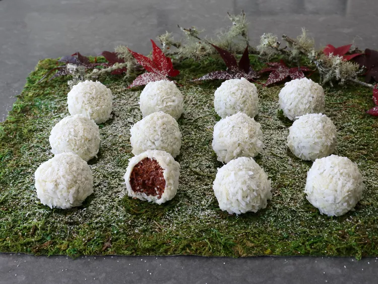

Chocolate Rum Snowballs

Description
These chocolate rum snowballs put a seasonal twist on the classic rum ball, which is one of the easiest, most delicious no-bake cookies ever. For the full snowball effect, these are coated in white chocolate, then rolled in coconut, but you can also finish them more simply by rolling them generously in powdered sugar.
Ingredients
- 1 (11-ounce) box vanilla wafers
- 3/4 cup confectioners sugar, plus more for rolling
- 2 tablespoons unsweetened cocoa powder
- 1/4 cup mini dark chocolate chips, or finely chopped dark chocolate
- 2 tablespoons maple syrup
- 1/3 cup plus 1 tablespoon dark rum, plus more as needed
For Coating:
- 3 cups finely shredded sweetened coconut
- 10 ounces white chocolate, chopped into small pieces